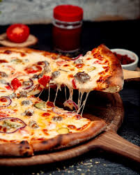
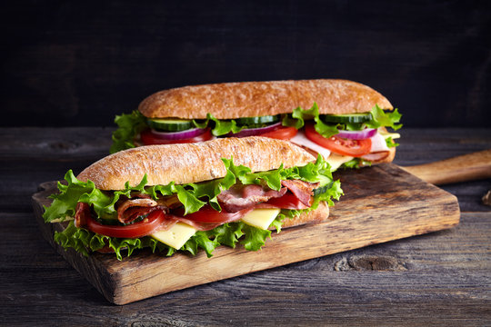

Pizza
 Pizza is a savory dish of Italian origin, consisting of a usually round, flat base of leavened wheat-based dough topped with tomatoes, cheese, and often various other ingredients (such as anchovies, olives, vegetables, meat, etc.), which is then baked at a high temperature, traditionally in a wood-fired oven. A small pizza is sometimes called a pizzetta. A person who makes pizza is known as pizzaiolo
Sandwich
 A sandwich is a food item consisting of two or more slices of bread with one or more fillings between them, or one slice of bread with a filling on top. The bread can be any type, such as white, whole wheat, rye, or sourdough. The fillings can include meats, cheeses, vegetables, spreads, and condiments. Sandwiches are often served cold but can also be toasted or grilled.